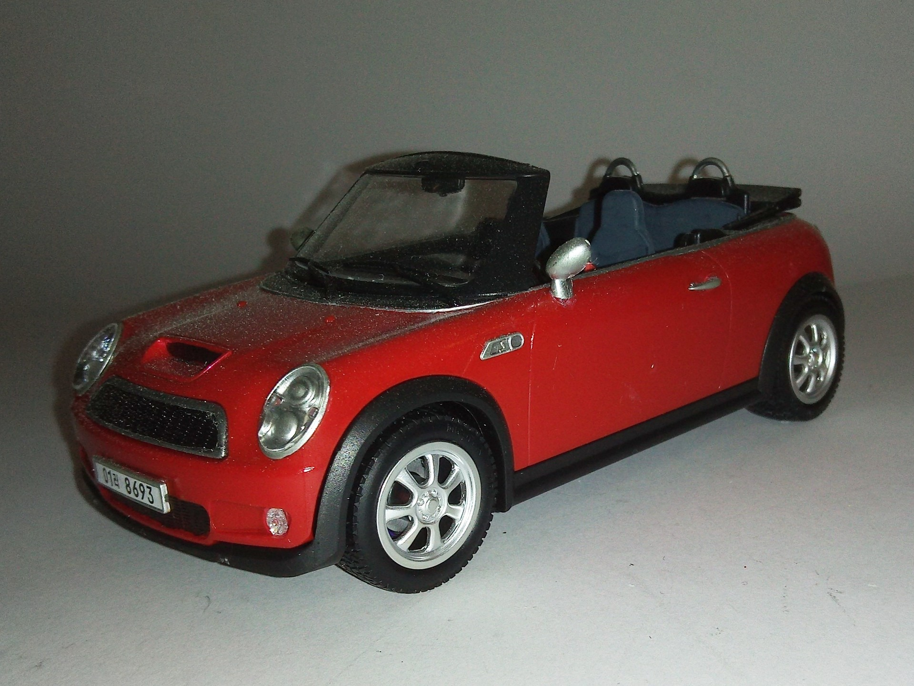
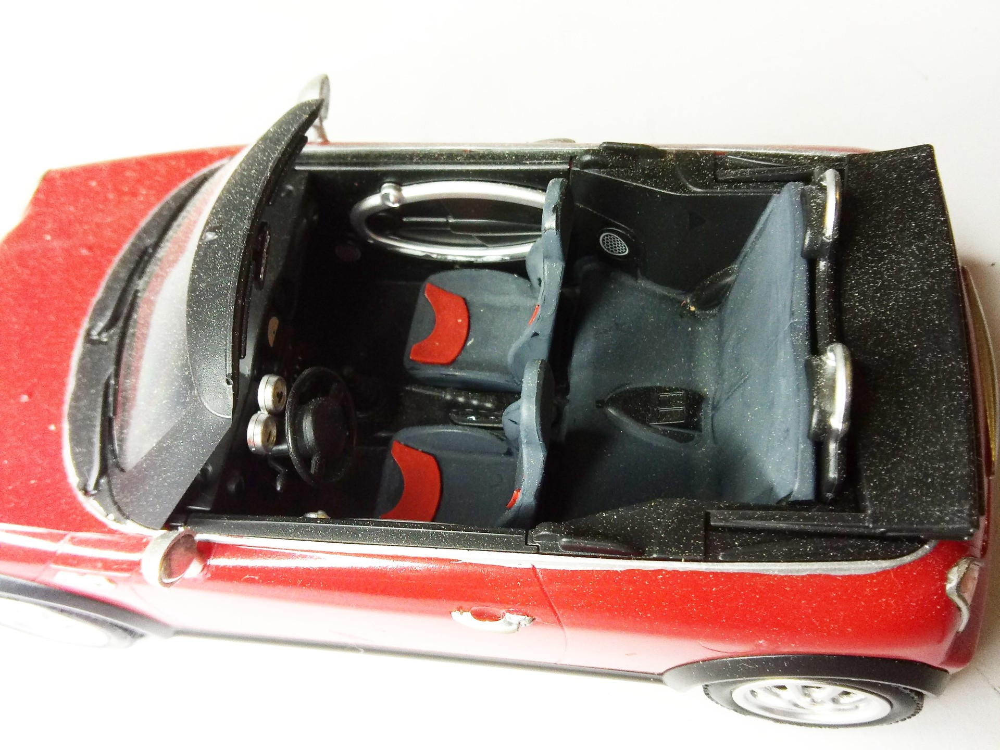
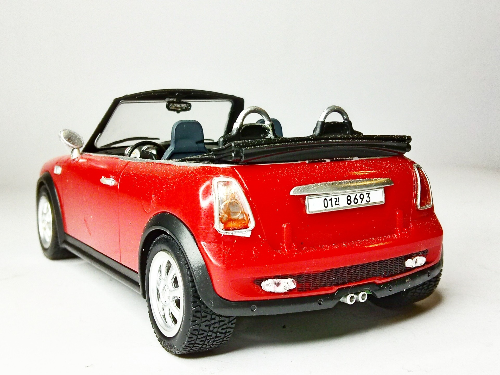
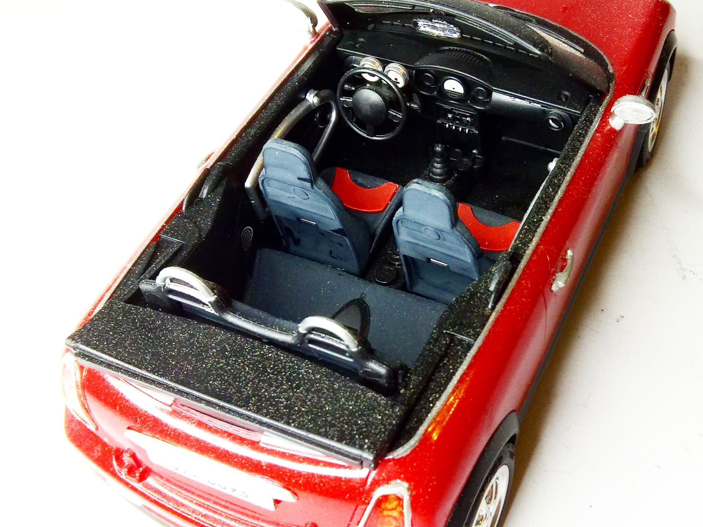

Auto e veicoli stradali · scale model archive
Mini Convertible
Mini Convertible — Kit: Academy, Scale: 1/24. Nice model to show the fully visible interior #1/24 #Academy #Mini

Photo gallery



English description
Nice model to show the fully visible interior
#1/24 #Academy #Mini
Descrizione italiana
Bel modello per mostrare l’abitacolo completamente visibile.